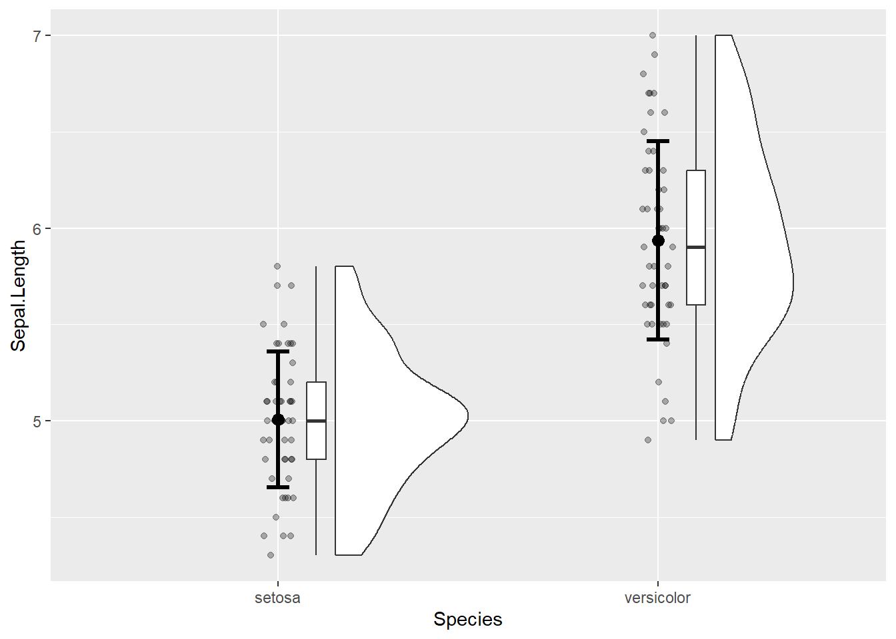
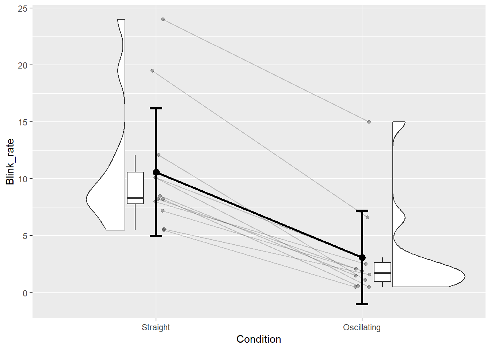

# Configuration du jeu de données pour l'exemple avec données non appariées.
# Il s'agit ici d'obtenir le jeu de données `iris` avec seulement deux modalités
# de la variable `Species`, cela en enlevant la modalité `virginica`.
iris_two_species <-
iris |> filter(Species != "virginica")5 Différence de moyennes standardisée
Lorsqu’on compare des données quantitatives en fonction des modalités d’une variable qualitative, on peut avoir des données quantitatives qui sont non appariées (étude de type between-subject design en anglais) ou appariées (étude de type within-subject design en anglais). Avoir des données non appariées signifie que les données quantitatives correspondant aux différentes modalités de la variable qualitative étudiée ne sont pas liées. Un exemple simple, pour ce premier cas, peut être la comparaison de la taille entre les hommes et les femmes. Dans ce cas, les données quantitatives de taille proviendront forcément d’individus différents et ne formeront donc pas des paires. S’agissant des cas de données appariées, ils se retrouvent dans les études où plusieurs individus sont évalués plusieurs fois dans des conditions similaires ou différentes et que l’on cherche à comparer. En sciences du sport, un exemple relativement classique est de tester la performance d’endurance (variable quantitative) en ayant pris (condition de test) ou non (condition contrôle) une substance potentiellement ergonénique, la prise de substance ou non étant les modalités d’une même variable qualitative de type condition. Dans ce cas là, tous les individus auront des données dans les deux conditions et ces données seront donc appariées (dépendantes).
Les contraintes graphiques et les statistiques à calculer diffèrent selon que l’on est en présence de deux groupes (1 variable quantitative x 1 variable qualitative avec 2 modalités) ou de trois groupes et plus (1 variable quantitative x 1 variable qualitative avec 3 modalités ou plus). Ce chapitre s’intéresse seulement au cas avec 2 groupes de valeurs.
1 Étudier graphiquement la différence entre les groupes de valeurs
Lorsque l’on cherche à explorer la différence entre deux groupes (deux modalités d’une même variable qualitative) concernant les valeurs d’une variable quantitative donnée, il peut être intéressant de visualiser la distribution de la variable quantitative en fonction de chaque modalité de la variable qualitative. Pour faire cela, il a été proposé dans la littérature d’user de graphiques appelés raincloud plots qui combinent les avantages de plusieurs techniques graphiques et statistiques et par là même pallient les manques ou défauts inhérents à chacune de ces techniques (Allen et al., 2019). Les blocs de code ci-dessous, la Figure 5.1 et la Figure 5.2, proposent plusieurs options de mise en oeuvre de ce type de graphiques selon la situation d’étude (avec données non appariées et appariées).
1.1 Cas de deux groupes de données indépendants (non appariés)
La Figure 5.1, qui est associée au bloc de code ci-dessous, montre un graphique approprié pour des données non appariées.
ggplot(data = iris_two_species, aes(x = Species, y = Sepal.Length)) +
geom_rain(point.args = rlang::list2(alpha = 0.3)) +
stat_summary(
geom = "errorbar",
fun.data = "mean_sdl",
fun.args = list(mult = 1),
linewidth = 1.1,
width = 0.06
) +
stat_summary(
geom = "point",
fun = "mean",
size = 3
)

On note que pour montrer les moyennes et écarts-types sur la Figure 5.1, il a fallu utiliser la fonction stat_summary() du package Hmisc (qui est chargé automatiquement lors du chargement de ggplot2 après que Hmisc ait été installé). Cette fonction sert à visualiser un résumé statistique. Pour montrer les moyennes, on utilise fun = "mean", alors que pour montrer des écarts-types, on utilise fun.data = "mean_sdl". Pour les écarts-types, il faut ajouter fun.args = list(mult = 1) pour bien montrer une barre d’erreur ne correspondant qu’à un seul multiple de l’écart-type, car par défaut c’est deux fois l’écart-type qui est montré. On peut choisir la forme avec laquelle présenter le résumé statistique grâce à l’argument geom.
1.2 Cas de deux groupes de données dépendants (appariés)
La Figure 5.2 montre une proposition de graphique dans le cas de l’étude d’une comparaison de deux groupes de données appariés. Pour cela, nous avons installé le package PairedData et chargé le jeu de données associé, appelé Blink. Pour information, Blink contient des données de taux de clignotement des yeux obtenues chez 12 sujets et dans deux conditions différentes : une tâche où il fallait diriger un stylo selon une trajectoire rectiligne (modalité Straight), et une tâche où il fallait diriger un stylo selon une trajectoire présentant des oscillations (Oscillating). Ce jeu de données a été un peu transformé pour pouvoir passer à l’étape de la conception graphique, comme montré ci-dessous.
# Charger le package
library(PairedData)
# Charger le jeu de données
data(Blink)
# Configurer le jeu de données pour l'exemple avec données appariées
Blink2 <-
Blink |>
pivot_longer(
cols = c(Straight, Oscillating),
names_to = "Condition",
values_to = "Blink_rate"
) |>
mutate(
Condition = fct_relevel(
Condition, "Straight", "Oscillating"
)
)ggplot(data = Blink2, aes(x = Condition, y = Blink_rate)) +
geom_rain(
rain.side = "f1x1",
id.long.var = "Subject",
point.args = rlang::list2(alpha = 0.3)
) +
stat_summary(
aes(group = 1),
fun = "mean",
geom = "line",
linewidth = 1
) +
stat_summary(
geom = "errorbar",
fun.data = "mean_sdl",
fun.args = list(mult = 1),
size = 1.1,
width = 0.06
) +
stat_summary(
geom = "point",
fun = "mean",
size = 3
)

Le graphique montré ci-dessus pour données appariées contient des éléments graphiques supplémentaires par rapport à celui proposé pour les données non appariées : des lignes reliant les données individuelles, et une ligne reliant les statistiques qui représentent les tendances centrales (ici les moyennes). Ces deux types d’éléments graphiques sont importants pour explicitement montrer qu’il y a un lien entre les deux conditions de mesure (il s’agit des mêmes individus et donc du même groupe), et cela permet de mettre en évidence à la fois les trajectoires individuelles et celle du groupe entre les deux conditions de mesure.
Pour obtenir ces éléments supplémentaires, il a fallu configurer l’argument id.long.var de la fonction geom_rain() pour indiquer le nom de la variable sur laquelle se baser pour garder l’appariement des données individuelles entre les deux conditions et ainsi permettre un bon tracé des lignes individuelles. La ligne reliant les moyennes a été ajoutée grâce à la fonctionstat_summary() avec la particularité d’indiquer 1 pour l’argument group de la fonction aes() associée à la fonction stat_summary(). Enfin, l’argument rain.side de la fonction geom_rain() a été configuré de telle sorte à avoir les données des deux groupes en vis-à-vis, mais un autre choix aurait pu être fait.
2 Étudier numériquement la différence entre les groupes de valeurs
De prime abord, l’analyse qui pourrait être envisagée pour comparer deux groupes serait d’utiliser simplement la différence entre les moyennes des deux groupes. Toutefois, en se restreignant à cela, il pourrait être difficile de porter un jugement sur la grandeur relative de la différence entre les groupes comparés, qu’on pourrait appeler taille d’effet. Il serait également difficile de comparer cette taille d’effet avec celles observées dans d’autres études, en particulier celles traitant de thématiques différentes, car en étant calculée de la sorte, la taille d’effet serait inhérente à la nature des variables investiguées et à la grandeur des valeurs mesurées dans l’étude. Il est donc intéressant, dans ce genre de situations, de standardiser la différence de scores obtenue entre les deux groupes. Dans la littérature, la procédure de standardisation a été très développée pour la comparaison de moyennes. Pour cette raison, les sous-parties suivantes qui traitent de la comparaison de deux groupes présentent essentiellement les calculs pour obtenir une taille d’effet en vue de comparer des moyennes. Ces calculs sont repris de l’article de Lakens (2013). Quelques mots seront toutefois donnés pour les situations pour lesquelles ces calculs risqueraient de ne pas être appropriés.
2.1 Cas de deux groupes de données indépendants (non appariés)
2.1.1 \(d_{s}\) et \(d_{av}\) de Cohen
Classiquement, l’indice statistique utilisé pour calculer une différence de moyennes de manière standardisée entre deux groupes indépendants, à partir d’échantillons de population, est le \(d_{s}\) de Cohen. Cette statistique se calcule en faisant la différence entre les moyennes des deux groupes à comparer, et en divisant cette différence par l’écart-type combiné (ou commun) des deux groupes. Ce calcul est montré ci-dessous :
\[d_{s} = \frac{\overline{X}_{1} - \overline{X}_{2}} {\sqrt{\frac{(N_{1} - 1) \hat{\sigma}_{1}^2 + (N_{2} - 1) \hat{\sigma}_{2}^2} {N_{1} + N_{2} - 2}}},\]
avec \(\overline{X}_{1}\) et \(\overline{X}_{2}\) les moyennes des deux groupes comparés, \(N_{1}\) et \(N_{2 }\) les effectifs respectifs des deux groupes comparés, et \(\hat{\sigma}_{1}^2\) et \(\hat{\sigma}_{2}^2\) les variances respectives des deux groupes comparés. On peut remarquer qu’au dénominateur, la variance d’un groupe donné est multipliée par un coefficient calculé à partir de l’effectif du groupe, cela pour que le poids de la variance d’un groupe dans le calcul final soit ajusté par rapport à la taille du groupe représenté. Dans R, si l’on voulait calculer \(d_s\) manuellement, cela donnerait ceci (à partir du jeu de données iris_two_species) :
# Calcul des paramètres
X1 <- iris_two_species |> filter(Species == "setosa") |> pull(Sepal.Length) |> mean()
X2 <- iris_two_species |> filter(Species == "versicolor") |> pull(Sepal.Length) |> mean()
SD1 <- iris_two_species |> filter(Species == "setosa") |> pull(Sepal.Length) |> sd()
SD2 <- iris_two_species |> filter(Species == "versicolor") |> pull(Sepal.Length) |> sd()
N1 <- iris_two_species |> filter(Species == "setosa") |> pull(Sepal.Length) |> length()
N2 <- iris_two_species |> filter(Species == "versicolor") |> pull(Sepal.Length) |> length()
# Calcul de ds
ds <- (X1 - X2) / sqrt(((N1-1) * SD1^2 + (N2-1) * SD2^2) / (N1+N2-2))
ds[1] -2.104197Heureusement, le \(d_{s}\) de Cohen peut être facilement calculé à l’aide de la fonction cohens_d() du package effectsize, qui nécessite d’être installé puis chargé avant d’être utilisé :
library(effectsize)
cohens_d(
Sepal.Length ~ Species,
data = iris_two_species,
paired = FALSE,
pooled_sd = TRUE
)Cohen's d | 95% CI
--------------------------
-2.10 | [-2.59, -1.61]
- Estimated using pooled SD.Dans cet exemple, on remarque qu’on a bien cherché à savoir comment les données de la variable Sepal.Length pouvaient différer en fonction (~) des modalités de la variable Species. Si la fonction nous donne un résultat, il faut toutefois bien faire attention au sens du calcul qui a été réalisé. Configurée de la sorte, la fonction cohens_d() réalise la différence modalité 1 - modalité 2. Il faut donc savoir quelle est la modalité 1 et quelle est la modalité 2 dans la variable Species pour ensuite pouvoir interpréter le signe du résultat, qui est négatif ici avec la valeur de -2.10. Pour ce faire, on peut utiliser la fonction levels() :
levels(iris_two_species$Species)[1] "setosa" "versicolor" "virginica" L’ordre des modalités affichées nous indique que setosa est la modalité 1, et que versicolor est la modalité 2. (On remarque par ailleurs que le jeu de données iris_two_species contient toujours trois modalités à la suite du filtrage précédent du jeu de données iris à l’aide de la fonction filter()). Par conséquent, le \(d_{s}\) de Cohen de -2.10 obtenu plus haut indique que la longueur des sépales (Sepal.Length) pour l’espèce setosa est inférieure à celles des sépales de l’espèce versicolor. Cette interprétation est en cohérence avec le graphique réalisé au préalable (cf. Figure 5.1). Si l’on avait voulu avoir le calcul inverse (versicolor - setosa), il aurait fallu reconfigurer l’ordre des modalités, par exemple à l’aide de la fonction fct_relevel() du package forcats comme montré à la fin du chapitre 3.
De manière importante, le calcul de \(d_s\) à partir d’un échantillon en vue d’avoir une estimation dans la population suppose que les variances des deux groupes dans la population d’intérêt soient similaires. Si cette supposition n’est pas valide ou est non désirée, alors il peut être préconisé de calculer un autre indicateur appelé \(d_{av}\) (voir explications ici), lequel consiste à diviser la différence de moyennes par un écart-type moyen :
\[d_{av} = \frac{\overline{X}_{1} - \overline{X}_{2}} {\sqrt{\frac{\hat{\sigma}_{1}^2 + \hat{\sigma}_{2}^2} {2}}}\]
En repartant des paramètres calculés précédemment, on peut manuellement obtenir cet indice comme ceci :
# Calcul de dav
dav <- (X1 - X2) / sqrt((SD1^2 + SD2^2) / 2)
dav[1] -2.104197On peut obtenir le \(d_{av}\) avec le package effectsize comme ceci (avec pooled = FALSE) :
cohens_d(
Sepal.Length ~ Species,
data = iris_two_species,
paired = FALSE,
pooled_sd = FALSE
)Cohen's d | 95% CI
--------------------------
-2.10 | [-2.60, -1.60]
- Estimated using un-pooled SD.On note que les valeurs de \(d_s\) et de \(d_{av}\) ne changent pas dans nos exemples car chaque modalité de la variable Species est associée au même nombre d’individus, ce qui revient à faire des calculs similaires pour les deux indices statistiques obtenus jusqu’à présent.
Malheureusement, il se trouve que \(d\) (\(d_s\) ou \(d_{av}\)) est indicateur qui est biaisé positivement lorsqu’il s’agit d’estimer la différence de moyennes standardisée à l’échelle de la population d’intérêt. Par « biaisé positivement », il faut comprendre que si une multitude d’études s’intéressait à calculer \(d\) et qu’on faisait la moyenne des résultats trouvés, alors on aurait une surestimation de la magnitude de la valeur de \(d\) dans la population (il s’agit d’un fait qui peut être démontré avec des simulations sur un ordinateur), cela notamment dans le cas où les études utiliseraient de petits échantillons (N < 20), selon Hedges et Okins (1985) cités par Lakens (2013).
2.1.2 \(g_{s}\) et \(g_{av}\) de Hedges
Pour régler le problème de biais que pose le \(d\) de Cohen, un autre indicateur statistique a été proposé : le \(g\) de Hedges. Il s’agit en réalité du \(d\) de Cohen, mais qu’on modifie grâce à l’utilisation d’un facteur de correction. Une approximation de \(g\) est montrée ci-dessous (2013) :
\[g = d (1 - \frac{3}{4(N_{1} + N_{2}) - 9}),\]
avec \(d\) le \(d_s\) ou le \(d_{av}\) de Cohen, et \(N_{1}\) et \(N_{2}\) les effectifs respectifs des deux groupes comparés. En réalité, le calcul exact du facteur de correction est relativement complexe, et est montré avec l’équation ci-dessous (Kelley, 2005) :
\[g = d \frac{\Gamma(\frac{df}{2})}{\sqrt{\frac{df}{2}\Gamma(\frac{df-1}{2})}} \]
avec \(\Gamma\) la loi Gamma, et \(df\) ce qu’on appelle le nombre de degrés de liberté (qui est ici égal au nombre total d’individus moins 2). Dans les faits, les différences entre \(d\) et \(g\) sont minimes, surtout avec \(N\) > 20 dans les groupes.
Dans R, le \(g_{s}\) de Hedges lié à un échantillon de population peut être calculé à l’aide de la fonction hedges_g() du package effectsize :
hedges_g(
Sepal.Length ~ Species,
data = iris_two_species,
paired = FALSE,
pooled_sd = TRUE
)Hedges' g | 95% CI
--------------------------
-2.09 | [-2.57, -1.60]
- Estimated using pooled SD.Ici, la valeur ne change pas beaucoup par rapport à \(d_s\) car l’effectif n’est pas si petit que cela (\(N_{1}\) + \(N_{2}\) = 100 ici, ce qui fait que la correction appliquée au \(d_{s}\) de Cohen est minime).
Le \(g_{av}\) de Hedges lié à un échantillon de population peut aussi être calculé à l’aide de la fonction hedges_g() du package effectsize (avec pooled = FALSE) :
hedges_g(
Sepal.Length ~ Species,
data = iris_two_species,
paired = FALSE,
pooled_sd = FALSE
)Hedges' g | 95% CI
--------------------------
-2.09 | [-2.58, -1.58]
- Estimated using un-pooled SD.Par principe, il pourrait être recommandé de toujours utiliser le \(g\) (\(g_s\) ou \(g_{av}\)) de Hedges (Lakens, 2013).
2.1.3 Qualification de l’importance de la différence de moyennes standardisée
Une fois que l’on a calculé une taille d’effet, il est toujours intéressant d’essayer de formuler un jugement sur l’importance, l’ampleur de l’effet. En ce sens, des valeurs seuils ont été proposées dans la littérature (Cohen, 1988; in Lakens (2013)). Ces valeurs, valables pour interpréter des tailles d’effet dans le cadre d’une étude de type between-subject design, sont montrées dans le Tableau 5.1 ci-dessous.
Petit |
Moyen |
Grand |
|---|---|---|
>=0.2 |
>=0.5 |
>=0.8 |
La classification montrée dans ce tableau doit être utilisée avec précaution, car en réalité l’importance d’un effet s’apprécie aussi au regard du contexte dans lequel il s’applique. Les valeurs du tableau donnent donc des repères généraux mais ne peuvent pas au final servir d’étalon universel (Lakens, 2013).
Il existe également une autre approche pour interpréter une valeur de taille d’effet : l’approche Common Language explanation (Lakens, 2013). Cette approche consiste à faire le lien entre la valeur de la taille d’effet et les probabilités de rencontrer des valeurs similaires ou supérieures dans un groupe en comparaison à un autre. Par exemple, lorsqu’on obtient un \(d_{s}\) de Cohen de 0.80, cela peut se traduire par le fait qu’il y a 71.4 % de chances qu’une personne prise au hasard dans le groupe avec la meilleure moyenne ait un score plus élevé qu’une personne qui serait prise au hasard dans le groupe avec la moyenne la plus basse des deux groupes. Kristoffer Magnusson a réalisé une page web qui permet d’utiliser l’approche Common Language explanation pour n’importe quelle valeur de taille d’effet dans le cadre d’une étude de type between-subject design. Jetez donc un oeil au lien suivant pour plus de détails : https://rpsychologist.com/cohend.
2.1.4 Delta de Glass
Dans certains cas où l’on souhaiterait comparer les scores de deux groupes indépendants pour tester l’effet de deux conditions expérimentales différentes, l’expérimentation en tant que telle peut influencer, au-delà de la moyenne, l’écart-type de la variable réponse dans un des deux groupes. On peut se trouver dans ce genre de situation lorsque l’on compare les données post-programme d’un groupe entraîné ou traité à celles d’un groupe contrôle. En effet, le groupe entraîné/traité peut voir son écart-type changé au terme d’un programme en raison d’une réponse individuelle hétérogène à ce programme, ce qui ne sera pas en principe le cas du groupe contrôle. Dans ce genre de situations, des indices statistiques autres que le \(d\) de Cohen ou le \(g\) de Hedges mériteraient d’être calculés, tels que le delta (\(\Delta\)) de Glass (Lakens, 2013) :
\[\Delta = \frac{\overline{X}_{1} - \overline{X}_{2}} {\hat{\sigma}_{2}}\]
Le calcul du \(\Delta\) de Glass est dans l’idée le même que celui du \(d\) de Cohen, sauf que la différence entre les moyennes des deux groupes n’est pas divisée par un écart-type lié aux deux groupes, mais par l’écart-type d’un seul des deux groupes, qui serait en principe celui qui représenterait la condition contrôle ou la condition de référence. Une pratique souvent recommandée pour comparer dans ce genre de situation les scores post-programme de deux groupes (un groupe entraîné/traité et un groupe contrôle) serait d’utiliser l’écart-type des scores du groupe contrôle obtenu en pré-programme (Lakens, 2013).
Dans R, le \(\Delta\) de Glass lié à un échantillon de population peut être calculé à l’aide de la fonction glass_delta() du package effectsize. Attention, l’écart-type utilisé dans le code suivant est celui de la variable quantitative associée à la modalité 2 de la variable qualitative, qui est toujours versicolor dans cet exemple (exemple dont le contexte n’est certes pas celui d’un programme dont on cherche l’effet, mais le principe d’utilisation du code reste le même).
glass_delta(Sepal.Length ~ Species,
data = iris_two_species)Glass' delta (adj.) | 95% CI
------------------------------------
-1.77 | [-2.25, -1.29]Notons quand même que l’utilisation du \(\Delta\) de Glass semble peu courante dans les études cherchant à tester l’effet d’un programme. L’une des difficultés liées à son utilisation est que cela suggère que les groupes à comparer soient identiques en pré-programme pour la variable étudiée. En général, des procédures un peu plus sophistiquées sont utilisées pour déterminer l’effet d’un programme, en particulier des procédures qui permettent de prendre en compte justement les différences qui peuvent exister entre les groupes en pré-programme.
2.1.5 Cas particuliers
Certaines situations peuvent rendre la comparaison de moyennes non pertinente. C’est par exemple le cas lorsque l’un des deux groupes (voire les deux) présentent des données aberrantes ou très extrêmes, en particulier en présence de petits échantillons. L’utilisation des moyennes dans ce cas pourrait ne pas être pertinente car ces moyennes ne refléteraient alors pas correctement les tendances centrales (et donc les groupes associés). Dans ces cas là, mieux vaut observer les médianes de chaque groupe et chercher à voir si les distributions sont en décalage ou non.
2.2 Cas de deux groupes de données dépendants (appariés)
2.2.1 \(d_{z}\) et \(d_{av}\) de Cohen
Le calcul classique pour obtenir la taille d’effet désignant l’écart de moyennes entre deux groupes de données dépendants est celui du \(d_{z}\) (Lakens, 2013), qui est montré ci-dessous :
\[d_{z} = \frac{\overline{X} _{diff}}{\hat{\sigma}_{diff}},\]
\(\overline{X}_{diff}\) désignant la moyenne des différences relatives à chaque pair de valeurs obtenues dans les deux conditions comparées, et \(\hat{\sigma}_{diff}\) désignant l’écart-type de ces différences.
Dans R, on peut calculer manuellement \(d_z\) comme ceci (avec le jeu de données Blink) :
# Calcul des paramètres
diff <- Blink$Straight - Blink$Oscillating
mean_diff <- mean(diff)
sd_diff <- sd(diff)
# Calcul de dz
dz <- mean_diff / sd_diff
dz[1] 2.811462Le \(d_{z}\) peut heureusement être obtenu à nouveau avec la fonction cohens_d() du package effectsize. Pour illustrer cela, nous allons utiliser le jeu de données Blink2 crée plus haut pour l’exemple de graphique :
#
cohens_d(
Pair(Blink_rate[Condition == "Straight"], Blink_rate[Condition == "Oscillating"]) ~ 1,
data = Blink2
)Cohen's d | 95% CI
------------------------
2.81 | [1.51, 4.09]Parce que la valeur de \(d_z\) dépend de la corrélation entre les deux groupes de valeurs comparés, certains auteurs préfèrent rapporter un autre indice statistique qui n’a pas cette propriété et qui en ce sens pourrait être davantage comparable au \(d\) de Cohen obtenu dans les études avec groupes indépendants. Parmi les candidats possibles, il y a notamment le \(d_{av}\) de Cohen (Lakens, 2013), dont la formule est montrée ci-dessous :
\[d_{av} = \frac{\overline{X} _{diff}}{\sqrt{\frac{\hat{\sigma}_{1}^2 + \hat{\sigma}_{2}^2} {2}}}\]
Ce calcul reviendrait donc à diviser la moyenne des différences (qui est égale à la différence de moyennes) par l’écart-type moyen relatif aux deux groupes de données. Manuellement cela donnerait (avec Blink2) :
# Calcul des paramètres
X1 <- Blink2 |> filter(Condition == "Straight") |> pull(Blink_rate) |> mean()
X2 <- Blink2 |> filter(Condition == "Oscillating") |> pull(Blink_rate) |> mean()
SD1 <- Blink2 |> filter(Condition == "Straight") |> pull(Blink_rate) |> sd()
SD2 <- Blink2 |> filter(Condition == "Oscillating") |> pull(Blink_rate) |> sd()
N1 <- Blink2 |> filter(Condition == "Straight") |> pull(Blink_rate) |> length()
N2 <- Blink2 |> filter(Condition == "Oscillating") |> pull(Blink_rate) |> length()
# Calcul de dav
dav <- (X1 - X2) / sqrt((SD1^2 + SD2^2) / 2)
dav[1] 1.525146Pour obtenir \(d_{av}\) avec des données appariées et la fonction cohens_d(), il faut procéder comme s’il s’agissait de données non appariées :
cohens_d(
Blink_rate ~ Condition,
data = Blink2,
paired = FALSE,
pooled_sd = FALSE
)Cohen's d | 95% CI
------------------------
1.53 | [0.58, 2.44]
- Estimated using un-pooled SD.2.2.2 \(g_{z}\) et \(g_{av}\) de Hedges
Comme pour les \(d\) de Cohen calculés dans le cadre de groupes indépendants, les \(d\) de Cohen obtenus avec groupes dépendants sont positivement biaisés. À nouveau, ces indices statistiques peuvent être corrigés avec le même facteur de correction montré pour le \(g\) de Hedges dans la partie sur les groupes dépendants. Toutefois, \(g_{av}\) ne serait malgré tout pas complètement non biaisé (Lakens, 2013).
Pour obtenir \(g_z\) :
hedges_g(
Pair(Blink_rate[Condition == "Straight"], Blink_rate[Condition == "Oscillating"]) ~ 1,
data = Blink2
)For paired samples, 'repeated_measures_d()' provides more options.Hedges' g | 95% CI
------------------------
2.61 | [1.41, 3.80]Pour obtenir \(g_{av}\) :
hedges_g(
Blink_rate ~ Condition,
data = Blink2,
paired = FALSE,
pooled_sd = FALSE
)Hedges' g | 95% CI
------------------------
1.47 | [0.56, 2.35]
- Estimated using un-pooled SD.2.2.3 Cas particuliers
Lorsque la présence de valeurs aberrantes peut fausser le calcul de la taille d’effet que l’on cherche à caractériser dans la population étudiée, une première idée pourrait être ici de faire la différence des médianes des deux groupes. Toutefois, comme le rappellent Weissegerber et al. (2015), cette approche n’est mathématiquement pas correcte pour caractériser l’évolution typique des scores étudiés. La bonne méthode est de calculer la médiane des différences. Le code ci-dessous présente donc le calcul de la médiane des différences, ici à partir du jeu de données Blink. La visualisation graphique correspondante pourrait être alors un raincloud plot pour une seule variable, celle des différences entre les deux conditions. Le code pour ce type de graphiques a été vu au chapitre précédent.
# Calcul de la médiane des différences
Blink |>
mutate(Difference = Straight - Oscillating) |>
summarise(median_diff = median(Difference)) median_diff
1 73 Résumé
- L’analyse graphique de la comparaison de deux groupes de valeurs peut se faire à l’aide de raincloud plots.
- L’analyse numérique consistant à comparer deux groupes de valeurs peut consister à calculer une différence de moyennes standardisée.
- Les indices de différence de moyennes standardisée non biaisés sont les \(g_{s}\) et \(g_{av}\) de Hedges en cas de groupes indépendants et les \(g_{z}\) et \(g_{av}\) de Hedges en cas de groupes dépendants.
- Afin d’éviter la supposition que les variances des groupes comparés sont égales (avec des groupes indépendants) ou pour rendre les résultats d’études avec groupes dépendants plus comparables avec les études ayant utilisé des groupes indépendants, le \(g_{av}\) de Hedges pourrait être privilégié.